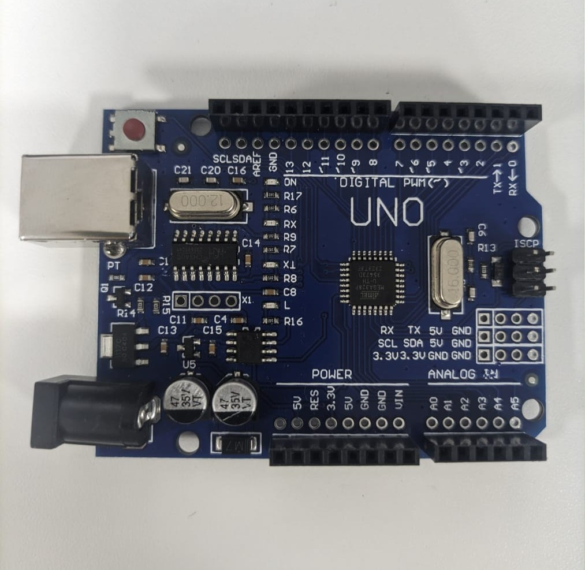

Arduino

O que é o arduino?
É uma placa com uma série de microcomputadores e componentes integrados.
Escala do arduino
Entrada: 0 - 1023
Saída: 0 - 255
O que é entrada analógica e o que é entrada digital no arduino?
A entrada analógica vai ler se está ligado (1) ou desligado (0) e a entrada digital vai ler tensões variadas, com valores indo de 0 a 1023.
O que é saída analógica (PWM) arduino?